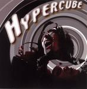

Home Artist links Label link

Hypercube - Hypercube
| Artist: | Hypercube |
| Title: | Hypercube |
| Label: | Hypercube/OUTBREAK |
| Length(s): | 18 minutes |
| Year(s) of release: | 2005 |
| Month of review: | [02/2006] |
Line up
Ken Sumihara - voice, guitar
Yusuke Onoue - bass
Kozy Endojin - drums
Tracks
| 1) | Kirin | 8.01
|
| 2) | Freak Out | 4.19
|
| 3) | Acid Rain | 5.52
|
Summary
Fujiro Uchida is the owner of House Of Rocks and OUTBREAK in Tokyo,
where bands come in and play. what they play is often recorded and released
and this mini album is no different.
The music
Kirin opens with slow bass and occasional percussion. Then the vocals
come in. They certainly enrich the music, because Sumihara has
a soulful voice, although not many will call it beautiful.
There is a strongly seventies feel about the music,
the music feels very free, very open, with a strong blues
undercurrent, but with the right amount of tension. I guess
Led Zeppelin in Kashmir style comes closest, especially when
the staccato march rhythm guitar sets in. The final half of the
song has a furious guitar solo.
Freak Out shows a very different face, with Primus style vocals and an enormous
bass presence. This is more straighforward plodding rock, like American alt.
On Acid Rain, we come back to a percussive and quieter place, although the
drum solos and noisy guitar do set in at some point (similar to what
happened in the first track). The vocals sound very American again.
Conclusion
Track one and three sound good, even though this live recording has its aural
limitations. There is something very free and seventies about the proceedings,
the emotional, raw and rough vocals fit in well with the music,
and the band knows how to subdued and rock out. The middle track was strongly
Primus like, and a bit of an odd one out (if you can speak in such terms
when comparing with two other tracks). Still, I certainly wouldn't mind hearing
more of these guys.
© Jurriaan Hage